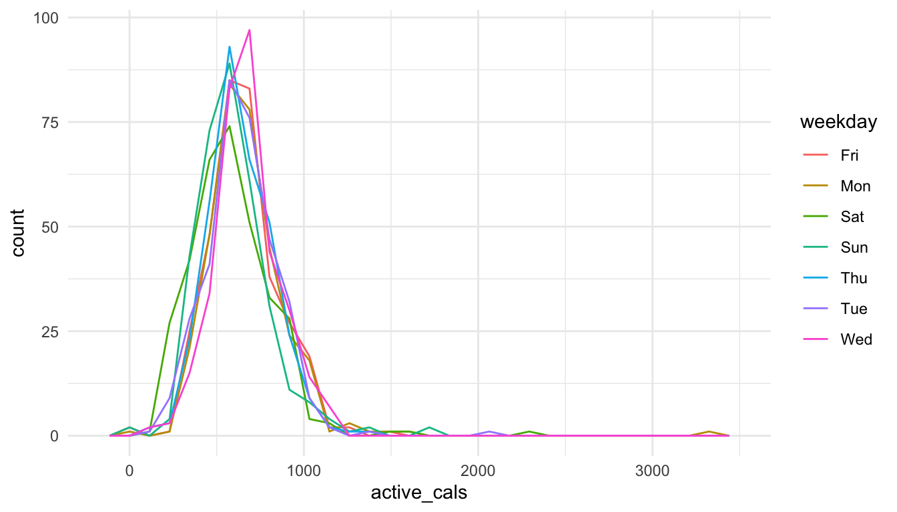

7 Coding in Base R
VIDEO: Variable Classes
Goals:
- describe common classes for variables in a data set.
- explain why some
Rerrors come about from class misspecifications. - use indexing to reference rows, columns, or specific observations in a
tibbleor data set.
Motivation
“Base R” generally refers to R code that we can use without loading in any outside packages (so this code is not in the tidyverse family of packages). Why is the chapter on R basics not the first chapter that we discuss? There certainly are advantages of doing things that way, but there are also advantages of not starting out with something like “classes of variables in R.”
First, it’s not the most inherently interesting thing to look at. It’s a lot more fun to make plots and wrangle data. As long as someone makes sure that the variables are already of the “correct” class, then there’s no need to talk about this.
Second, much of what we discuss here will make more sense, having the previous four chapters under our belt. We’ll be able to see how misspecified variable classes cause issues in certain summaries and plots and we already know how to make those plots and get those summaries.
7.1 Variable Classes in R
R has a few different classes that variables take, including numeric, factor, character Date, and logical. Before we delve into the specifics of what these classes mean, let’s try to make some plots to illustrate why we should care about what these classes mean.
The videogame_clean.csv file contains variables on video games from 2004 - 2019, including
-
game, the name of the game -
release_date, the release date of the game -
release_date2, a second coding of release date -
price, the price in dollars, -
owners, the number of owners (given in a range) -
median_playtime, the median playtime of the game -
metascore, the score from the website Metacritic -
price_cat, 1 for Low (less than 10.00 dollars), 2 for Moderate (between 10 and 29.99 dollars), and 3 for High (30.00 or more dollars) -
meta_cat, Metacritic’s review system, with the following categories: “Overwhelming Dislike”, “Generally Unfavorable”, “Mixed Reviews”, “Generally Favorable”, “Universal Acclaim”. -
playtime_miss, whether median play time is missing (TRUE) or not (FALSE)
The data set was modified from https://github.com/rfordatascience/tidytuesday/tree/master/data/2019/2019-07-30.
Run the code in the following R chunk to read in the data.
library(tidyverse)
library(here)
videogame_df <- read_csv(here("data/videogame_clean.csv"))
head(videogame_df)
#> # A tibble: 6 × 15
#> game relea…¹ release_…² price owners media…³ metas…⁴ price…⁵ meta_…⁶
#> <chr> <chr> <date> <dbl> <chr> <dbl> <dbl> <dbl> <chr>
#> 1 Half-Life 2 Nov 16… 2004-11-16 9.99 10,00… 66 96 1 Univer…
#> 2 Counter-St… Nov 1,… 2004-11-01 9.99 10,00… 128 88 1 Genera…
#> 3 Counter-St… Mar 1,… 2004-03-01 9.99 10,00… 3 65 1 Mixed …
#> 4 Half-Life … Nov 1,… 2004-11-01 4.99 5,000… 0 NA 1 <NA>
#> 5 Half-Life:… Jun 1,… 2004-06-01 9.99 2,000… 0 NA 1 <NA>
#> 6 CS2D Dec 24… 2004-12-24 NA 1,000… 10 NA NA <NA>
#> # … with 6 more variables: playtime_miss <lgl>, number <dbl>,
#> # developer <chr>, publisher <chr>, average_playtime <dbl>,
#> # meta_cat_factor <chr>, and abbreviated variable names ¹release_date,
#> # ²release_date2, ³median_playtime, ⁴metascore, ⁵price_cat, ⁶meta_catA data frame or tibble holds variables that are allowed to be different classes. If a variable is a different class than you would expect, you’ll get some strange errors or results when trying to wrangle the data or make graphics.
Run the following lines of code. In some cases, we are only using the first 100 observations in videogame_small. Otherwise, the code would take a very long time to run.
videogame_small <- videogame_df |> slice(1:100)
ggplot(data = videogame_small, aes(x = release_date, y = price)) +
geom_point()
ggplot(data = videogame_small, aes(x = release_date2, y = metascore)) +
geom_point(aes(colour = price_cat))In the first plot, release_date isn’t ordered according to how you would expect (by date). Instead, R orders it alphabetically.
In the second plot, we would expect to get a plot with 3 different colours, one for each level of price_cat. Instead, we get a continuous colour scale, which doesn’t make sense, given that price_cat can only be 1, 2, or 3.
Both plots are not rendered correctly because the variable classes are not correct in the underlying data set. Up until this point, the data that has been provided has almost always had the correct variable classes, by default, but that won’t always be the case!
We’ve actually seen both of these issues before as well (the Date issue in the exercise data and the continuous colour scale in the cars data), but, in both of these instances, code was provided to “fix” the problem. After this section, you’ll have the tools to fix many class issues on your own!
If you examine the output of the following line of code
head(videogame_df)
#> # A tibble: 6 × 15
#> game relea…¹ release_…² price owners media…³ metas…⁴ price…⁵ meta_…⁶
#> <chr> <chr> <date> <dbl> <chr> <dbl> <dbl> <dbl> <chr>
#> 1 Half-Life 2 Nov 16… 2004-11-16 9.99 10,00… 66 96 1 Univer…
#> 2 Counter-St… Nov 1,… 2004-11-01 9.99 10,00… 128 88 1 Genera…
#> 3 Counter-St… Mar 1,… 2004-03-01 9.99 10,00… 3 65 1 Mixed …
#> 4 Half-Life … Nov 1,… 2004-11-01 4.99 5,000… 0 NA 1 <NA>
#> 5 Half-Life:… Jun 1,… 2004-06-01 9.99 2,000… 0 NA 1 <NA>
#> 6 CS2D Dec 24… 2004-12-24 NA 1,000… 10 NA NA <NA>
#> # … with 6 more variables: playtime_miss <lgl>, number <dbl>,
#> # developer <chr>, publisher <chr>, average_playtime <dbl>,
#> # meta_cat_factor <chr>, and abbreviated variable names ¹release_date,
#> # ²release_date2, ³median_playtime, ⁴metascore, ⁵price_cat, ⁶meta_catyou’ll see that, at the very top of the output, right below the variable names, R provides you with the classes of variables in the tibble.
-
<chr>is character, used for strings or text. -
<fct>is used for variables that are factors, typically used for character variables with a finite number of possible values the variable can take on. -
<date>is used for dates. -
<dbl>stands for double and is used for thenumericclass. -
<int>is for numbers that are all integers. In practice, there is not much difference between this class and classdbl. -
<lgl>is for logical, variables that are eitherTRUEorFALSE.
7.1.1 Referencing Variables and Using str()
We can use name_of_dataset$name_of_variable to look at a specific variable in a data set:
videogame_df$gameprints the first thousand entries of the variable game. There are a few ways to get the class of this variable: the way that we will use most often is with str(), which stands for “structure”, and gives the class of the variable, the number of observations (26688), as well as the first couple of observations:
str(videogame_df$game)
#> chr [1:26688] "Half-Life 2" "Counter-Strike: Source" ...You can also get a variable’s class more directly with class()
class(videogame_df$game)
#> [1] "character"7.2 Classes in Detail
The following gives summary information about each class of variables in R:
7.2.1 <chr> and <fct> Class
With the character class, R will give you a warning and/or a missing value if you try to perform any numerical operations:
You also can’t convert a character class to numeric. You can, however, convert a character class to a <fct> class, using as.factor(). The <fct> class will be useful when we discuss the forcats package, but isn’t particularly useful now.
In general, as._____ will lets you convert between classes. Note, however, that we aren’t saving our converted variable anywhere. If we wanted the conversion to the factor to be saved in the data set, we can use mutate():
For most R functions, it won’t matter whether your variable is in class character or class factor. In general, though, character classes are for variables that have a ton of different levels, like the name of the videogame, whereas factors are reserved for categorical variables with a finite number of levels.
7.2.2 <date> Class
The <date> class is used for dates, and the <datetime> class is used for Dates with times. R requires a very specific format for dates and times. Note that, while to the human eye, both of the following variables contain dates, only one is of class <date>:
release_date is class character, which is why we had the issue with the odd ordering of the dates earlier. You can try converting it using as.Date, but this function doesn’t always work:
as.Date(videogame_df$release_date)
#> Error in charToDate(x): character string is not in a standard unambiguous formatDates and times can be pretty complicated. In fact, we will spend an entire week covering them using the lubridate package.
On variables that are in Date format, like release_date2, we can use numerical operations:
What do you think taking the median or taking the mean of a date class means?
7.2.3 <dbl> and <int> Class
Class <dbl> and <int> are probably the most self-explanatory classes. <dbl>, the numeric class, are just variables that have only numbers in them while <int> only have integers (…, -2, -1, 0, 1, 2, ….). You can do numerical operations on either of these classes (and we’ve been doing them throughout the semester). For our purposes, these two classes are interchangeable.
str(videogame_df$price)
#> num [1:26688] 9.99 9.99 9.99 4.99 9.99 ...Problems arise when numeric variables are coded as something non-numeric, or when non-numeric variables are coded as numeric. For example, examine:
str(videogame_df$price_cat)
#> num [1:26688] 1 1 1 1 1 NA 2 1 1 1 ...price_cat is categorical but is coded as 1 for cheap games, 2 for moderately priced games, and 3 for expensive games. Therefore, R thinks that the variable is numeric, when, it’s actually a factor.
This is the cause of the odd colour scale that we encountered earlier and can be fixed by converting price_cat to a factor:
7.2.4 <lgl> Class
Finally, there is a class of variables called logical. These variables can only take 2 values: TRUE or FALSE. For example, playtime_miss, a variable for whether or not the median_playtime variable is missing or not, is logical:
str(videogame_df$playtime_miss)
#> logi [1:26688] FALSE FALSE FALSE TRUE TRUE FALSE ...It’s a little strange at first, but R can perform numeric operations on logical classes. All R does is treat every TRUE as a 1 and every FALSE as a 0. Therefore, sum() gives the total number of TRUEs and mean() gives the proportion of TRUEs. So, we can find the number and proportion of games that are missing their median_playtime as:
There’s a lot of games that are missing this information!
We’ve actually used the ideas of logical variables for quite some time now, particularly in statements involving if_else(), case_when(), filter(), and mutate().
The primary purpose of this section is to be able to identify variable classes and be able to convert between the different variable types with mutate() to “fix” variables with the incorrect class.
We will use the fitness data set again for this set of exercises, as the data set has some of the issues with variable class that we have discussed. However, in week 1, some of the work of the work to fix those issues was already done before you saw the data. Now, you’ll get to fix a couple of those issues! Read in the data set with:
Exercise 1. What is the issue with the following plot? After you figure out the issue, use mutate() and as.factor() to create a new variable that fixes the issue and then reconstruct the graph.
ggplot(data = fitness_df, aes(x = active_cals)) +
geom_freqpoly(aes(group = weekday, colour = weekday)) +
theme_minimal()
Exercise 2. Currently stepgoal (whether or not 10000 steps were cleared that day) is <dbl>. What is another class that stepgoal could be?
Exercise 3. Convert stepgoal to the class that is the answer to the previous exercise. Using this new variable, calculate the total number of days where the goal was met and the proportion of the days where the goal was met.
7.3 Object Types and Subsetting
Variables of these different classes can be stored in a variety of different objects in R. We have almost exclusively used the tibble object type. The tidy tibble
- is “rectangular” and has a specific number of rows and columns.
- has columns that are variables
- each column must have elements that are of the same class, but different columns can be of different classes. This allows us to have character and numeric variables in the same
tibble.
7.3.1 tibble and data.frame
The tibble object is very similar to the data.frame object. You can also check what type of object you’re working with using the str() command:
str(videogame_df) ## look at the beginning to see "tibble"We mostly use tibble and data frame interchangeably: the main difference between the two is that a tibble prints in a more reader friendly way. All of the data sets we have worked with over the semester have been tibbles.
We will have a small section on tibbles in the coming weeks so we won’t focus on them here. But, we should take note that, to reference a specific element in a tibble, called indexing, you can use [# , #]. So, for example, videogame_df[5, 3] grabs the value in the fifth row and the third column:
videogame_df[5, 3]
#> # A tibble: 1 × 1
#> release_date2
#> <date>
#> 1 2004-06-01More often, we’d want to grab an entire row (or range of rows) or an entire column. We can do this by leaving the row number blank (to grab the entire column) or by leaving the column number blank (to grab the entire row):
videogame_df[ ,3] ## grab the third column
videogame_df[5, ] ## grab the fifth rowWe can also grab a range of columns or rows using the : operator:
videogame_df[ ,3:7] ## grab columns 3 through 7
videogame_df[3:7, ] ## grab rows 3 through 7or we can grab different columns or rows using c():
To get rid of an entire row or column, use -: videogame_df[ ,-c(1, 2)] drops the first and second columns while videogame_df[-c(1, 2), ] drops the first and second rows.
7.3.2 Vectors
A vector is an object that holds “things”, or elements, of the same class. You can create a vector in R using the c() function, which stands for “concatenate”. We’ve used the c() function before to bind things together; we just hadn’t yet discussed it in the context of creating a vector.
Notice that vec2 is a character class. R requires all elements in a vector to be of one class; since R knows b can’t be numeric, it makes all of the numbers characters as well.
Using the dataset$variable draws out a vector from a tibble or data.frame:
videogame_df$metascoreIf you wanted to make the above vector “by hand”, you’d need to have a lot of patience: c(96, 88, 65, NA, NA, NA, 93, .........)
Just like tibbles, you can save vectors as something for later use:
metavec <- videogame_df$metascore
mean(metavec, na.rm = TRUE)
#> [1] 71.89544Vectors are one-dimensional: if we want to grab the 100th element of a vector we just use name_of_vector[100]:
metavec[100] ## 100th element is missing
#> [1] NA7.3.3 Lists
Lists are one of the more flexible objects in R: you can put objects of different classes in the same list and lists aren’t required to be rectangular (like tibbles are). Lists are extremely useful because of this flexibility, but, we won’t use them much in this class. Therefore, we will just see an example of a list before moving on:
testlist has four elements: a single character "a", a single number 4, a vector of 1, 4, 2, 6, and a tibble with a couple of variables. Lists can therefore be used to store complex information that wouldn’t be as easily stored in a vector or tibble.
Exercise 4. Suppose you subset a data frame df with df[1:5, 2:4]. What are the two dplyr functions that you can use to perform this same operation (subsetting to get the first five rows and the second through fourth columns).
Exercise 5. From videogame_df, create a tibble called first100 that only has the first 100 days in the data set using both (1) indexing with [ , ] and (2) a dplyr function.
Exercise 6. From videogame_df, create a tibble that doesn’t have the owners variable using both (1) indexing with [ , ] and (2) a dplyr function.
7.4 Other Useful Base R Functions
In addition to the base R functions we have discussed so far, there are many other useful base R functions. The following give some of the functions that I think are most useful for data science.
Generating Data: rnorm(), sample(), and set.seed()
rnorm() can be used to generate a certain number of normal random variables with a given mean and standard deviation. It has three arguments: the sample size, the mean, and the standard deviation.
sample() can be used to obtain a sample from a vector, either with or without replacement: it has two required arguments: the vector that we want to sample from and size, the size of the sample.
set.seed() can be used to fix R’s random seed. This can be set so that, for example, each person in our class can get the same random sample as long we all set the same seed.
These can be combined to quickly generate toy data. For example, below we are generating two quantitative variables (that are normally distributed) and two categorical variables:
set.seed(15125141)
toy_df <- tibble(xvar = rnorm(100, 3, 4),
yvar = rnorm(100, -5, 10),
group1 = sample(c("A", "B", "C"), size = 100, replace = TRUE),
group2 = sample(c("Place1", "Place2", "Place3"), size = 100,
replace = TRUE))
toy_df
#> # A tibble: 100 × 4
#> xvar yvar group1 group2
#> <dbl> <dbl> <chr> <chr>
#> 1 0.516 -13.5 B Place2
#> 2 -0.891 -13.3 A Place2
#> 3 5.58 -14.3 B Place2
#> 4 2.42 -4.91 C Place1
#> 5 1.43 -5.86 B Place2
#> 6 6.61 12.7 B Place2
#> # … with 94 more rowsTables: We can use the table() function with the $ operator to quickly generate tables of categorical variables:
Others: There are quite a few other useful base R functions. nrow() can be used on a data frame to quickly look at the number of rows of the data frame and summary() can be used to get a quick summary of a vector:
There are also some useful functions for viewing a data frame. View() function can be used in your console window on a data frame: View(toy_df) to pull up a spreadsheet-like view of the data set in a different window within R Studio.
Options to print() allow us to view more rows or more columns in the console printout:
toy_df |>
print(n = 60) ## print out 60 rows
#> # A tibble: 100 × 4
#> xvar yvar group1 group2
#> <dbl> <dbl> <chr> <chr>
#> 1 0.516 -13.5 B Place2
#> 2 -0.891 -13.3 A Place2
#> 3 5.58 -14.3 B Place2
#> 4 2.42 -4.91 C Place1
#> 5 1.43 -5.86 B Place2
#> 6 6.61 12.7 B Place2
#> 7 -2.04 -9.28 A Place1
#> 8 7.56 1.89 A Place3
#> 9 -0.425 -30.1 C Place1
#> 10 4.14 2.65 C Place2
#> 11 5.03 -8.82 C Place1
#> 12 2.98 -22.7 C Place1
#> 13 5.97 -2.67 B Place3
#> 14 0.882 1.59 A Place1
#> 15 2.14 -5.63 B Place3
#> 16 7.74 5.79 C Place3
#> 17 5.20 -3.17 B Place2
#> 18 2.89 -0.697 A Place1
#> 19 2.71 1.09 B Place2
#> 20 5.87 -4.87 C Place1
#> 21 5.65 -10.3 B Place2
#> 22 -0.520 -4.77 B Place3
#> 23 -0.130 -18.3 B Place3
#> 24 -0.174 -18.9 A Place3
#> 25 4.33 4.63 A Place3
#> 26 0.462 -12.8 A Place3
#> 27 5.53 -3.36 C Place1
#> 28 1.66 -5.34 A Place1
#> 29 -0.469 -13.2 C Place2
#> 30 7.51 -13.4 B Place1
#> 31 -1.82 -6.47 C Place3
#> 32 -2.44 -2.17 C Place3
#> 33 1.52 -12.6 C Place2
#> 34 4.60 -6.69 A Place2
#> 35 3.10 -25.5 A Place2
#> 36 -0.682 -20.4 A Place1
#> 37 -5.72 2.65 B Place3
#> 38 0.976 -12.1 B Place3
#> 39 1.39 2.78 B Place2
#> 40 6.67 -14.6 A Place1
#> 41 3.09 -10.4 B Place2
#> 42 -1.98 -12.8 A Place3
#> 43 0.225 13.9 C Place1
#> 44 5.71 -3.50 A Place3
#> 45 5.57 -2.02 B Place3
#> 46 8.96 -1.86 B Place2
#> 47 3.80 -11.3 C Place1
#> 48 7.40 -1.32 C Place2
#> 49 0.988 4.04 B Place2
#> 50 1.93 -5.24 A Place2
#> 51 5.23 13.2 C Place2
#> 52 -2.13 -19.6 A Place2
#> 53 6.05 -4.42 A Place3
#> 54 0.865 -9.47 A Place1
#> 55 4.16 -16.4 B Place1
#> 56 -2.73 -4.09 B Place2
#> 57 -0.532 7.70 C Place3
#> 58 -2.96 -11.6 C Place3
#> 59 4.34 -5.99 B Place2
#> 60 6.72 -13.6 B Place2
#> # … with 40 more rows
toy_df |>
print(width = Inf) ## print out all of the columns
#> # A tibble: 100 × 4
#> xvar yvar group1 group2
#> <dbl> <dbl> <chr> <chr>
#> 1 0.516 -13.5 B Place2
#> 2 -0.891 -13.3 A Place2
#> 3 5.58 -14.3 B Place2
#> 4 2.42 -4.91 C Place1
#> 5 1.43 -5.86 B Place2
#> 6 6.61 12.7 B Place2
#> # … with 94 more rowsWe will stop here, but will surely encounter more base R functions as we run into different types of problems.
Exercise 7. Use the summary() function on the metascore variable in videogame_df.
7.5 Practice
7.5.1 Class Exercises
Class Exercise 1. Use the following steps to create a new variable weekend_ind, which will be “weekend” if the day of the week is Saturday or Sunday and “weekday” if the day of the week is any other day. The current weekday variable is coded so that 1 represents Sunday, 2 represents Monday, …., and 7 represents Saturday.
Create a vector that has the numbers corresponding to the two weekend days. Name the vector and then create a second vector that has the numbers corresponding to the five weekday days.
Use
dplyrfunctions and the%in%operator to create the newweekend_indvariable.
Class Exercise 2. Use dplyr and tidyr functions to re-create the tables generated from
7.5.2 Your Turn
Your Turn 1. Read in the data set and use filter() to remove any rows with missing metascores, missing median playtime, or have a median playtime of 0 hours.
Note: We usually don’t want to remove missing values without a valid reason. In this case, a missing metascore means that the game wasn’t “major” enough to get enough critic reviews, and a missing or 0 hour median playtime means that there weren’t enough users who uploaded their playtime to the database. Therefore, any further analyses are constructed to games that are popular enough to both get enough reviews on metacritic and have enough users upload their median playtimes.
Your Turn 2. Make a scatterplot with median_playtime on the y-axis and metascore (the aggregate review score) on the x-axis with the filtered data set.
Your Turn 3. Something you may notice is that many of the points directly overlap one another. This is common when at least one of the variables on a scatterplot is discrete: metascore can only take on integer values in this case. Change geom_point() in your previous plot to geom_jitter(). Then, use the help to write a sentence about what geom_jitter() does.
Your Turn 4. Another option is to control point transparency with alpha. In your geom_jitter() statement, change alpha so that you can still see all of the points, but so that you can tell in the plot where a lot of points are overlapping.
Your Turn 5. Label the points that have median playtimes above 1500 hours. You may want to use the ggrepel package so that the labels don’t overlap.
Your Turn 6. Choose one of the games that got labeled and Google that game’s median, or possibly average, play time. Is it in the vicinity as the median_playtime recorded in our data set?
Your Turn 7. What should be done about the outliers? Discuss with your group advantages and disadvantages of keeping the outliers on the plot.